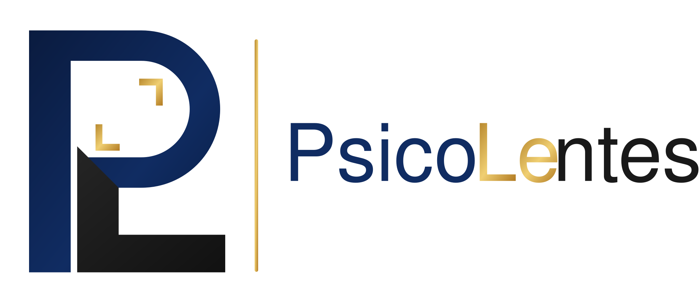

Um espaço para pensar

Olhar além
Psicanálise para olhar além do que parece óbvio. Um convite à reflexão, à escuta e ao autoconhecimento.

Psicanálise para olhar além do que parece óbvio. Um convite à reflexão, à escuta e ao autoconhecimento.